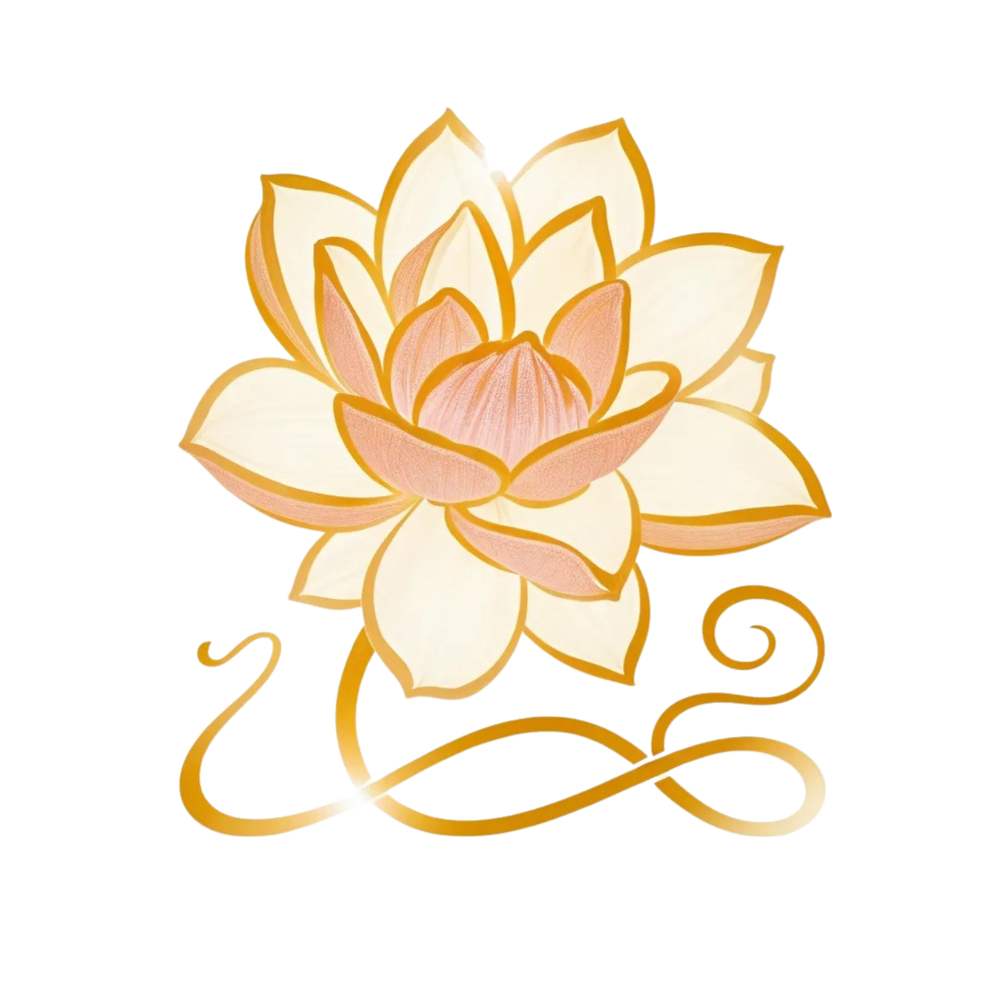

Озеленение офиса
Превратите ваш офис в источник вдохновения и силы для сотрудников и яркую визитную карточку вашего бренда. Я подбираю лаконичные и стильные зеленые растения, которые подчеркнут айдентику компании и создадут комфортную атмосферу для работы.
В рамках услуги по озеленению офиса я предлагаю:
1. Актуальные и подходящие растения для вашего офисного пространства и микроклимата.
2. Коллекцию дизайнерских кашпо, которые можно заказать или создать индивидуально под ваш интерьер.
3. Разработку рекомендаций по оптимальным локациям для размещения растений в офисе.
4. Выгодную программу по обслуживанию и уходу за растениями.
Чтобы процесс озеленения прошел максимально удобно для вас, я беру на себя все этапы подготовки, реализации и установки.

Озеленение публичных пространств
Задумайтесь, сколько времени люди проводят в аэропортах, торговых центрах, коворкингах, на вокзалах и в парках. Я знаю, как превратить эти публичные пространства в оазисы комфорта и благоприятной атмосферы.
Мои услуги по озеленению публичных пространств включают:
1. Подбор растений, которые очаровывают своими оттенками зеленого, создавая уют даже в суете аэропорта или вокзала, помогая глазам отдохнуть.
2. Разработка и изготовление функциональных скамеек-кашпо современного дизайна, которые служат одновременно местами отдыха и элементами озеленения, идеально дополняя пространство и обеспечивая комфорт посетителям.
3. Профессиональный подбор и уход за растениями, чтобы они могли выжить и прижиться в конкретных условиях.
Создайте не просто публичное пространство, а место силы в сердце большого города. Я с радостью помогу вам в этом!

Озеленение террас
Дополните вашу террасу растениями, и она превратится в уютное и притягательное пространство, куда вы будете стремиться возвращаться вновь и вновь. Я знаю, как создать центр зеленого дизайна именно на вашей террасе. Большой выбор растений, современные тенденции в озеленении и заботливый уход — вот что я предлагаю своим клиентам.

Экстерьерное озеленение
Вдохните новую жизнь в ваш экстерьер и превратите его в настоящее зеленое святилище. Расширьте свое жизненное пространство или пространство ваших клиентов с помощью зеленого дизайна. Я предлагаю широкий спектр услуг по озеленению: будь то создание зеленого дизайна вестибюля отеля, привлекательной эко-френдли террасы ресторана или уютной зоны для ланчей и бранчей возле дома.
Работая с высококачественными эксклюзивными кашпо, я тонко чувствую стиль и создаю максимально стильные зеленые локации, о которых вы мечтали.

Интерьерное озеленение
Ваш дом должен быть храмом — внутри и снаружи. С такой философией я подхожу к озеленению вашего дома-святилища, предлагая комплексный подход и полный спектр услуг. Чтобы оживить ваше пространство, я использую самые красивые кашпо, соответствующие стилю вашего интерьера, и подбираю оптимальные для ваших условий зеленые или цветущие растения со всего мира. Независимо от того, хотите ли вы озеленение с чистого листа или ищете последний штрих в уже готовом интерьере, я помогу вдохнуть новую жизнь в ваше пространство.

Композиции в кашпо
Green is the new luxury.
Пандемия разделила мир на «до» и «после». Теперь мы стремимся к замедлению, естественности, возвращению к природе и простым ремеслам — главные тенденции 2021–2022 годов.
Растения дома в кашпо из керамики или других натуральных материалов, зеленые стены и фитокартины стали незаменимыми элементами в интерьерах и экстерьерах домов и офисов, ведь они соединяют нас с природой даже в условиях мегаполиса.
Я предлагаю авторские композиции в кашпо собственного производства, которые способны наполнить ваше пространство духом дикой природы.
Обо мне
Меня зовут Светлана, и я посвящаю свою жизнь озеленению. С более чем X лет опыта я помогаю создавать вдохновляющие пространства.
Портфолио
Здесь вы можете увидеть некоторые из моих проектов:
Отзывы клиентов
"Работать с Светланой было одно удовольствие! Наш офис преобразился и теперь сотрудники приходят с большим удовольствием." - Анна И.
"Профессиональный подход и великолепный результат. Терраса стала любимым местом для всей семьи!" - Олег П.
Полезные статьи и часто задаваемые вопросы
Как происходит процесс заказа услуги?
Мы начинаем с консультации, обсуждаем ваши пожелания, проводим осмотр пространства и предлагаем индивидуальное решение.